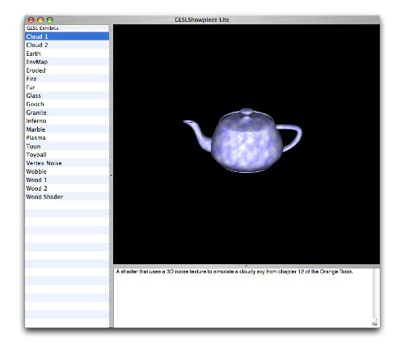

Getting Started with GLSL
on Mac OS X
The goal of this exercise is to show you how to get your own fragment and vertex shaders to run in a Cocoa application. By completing this exercise, you’ll be on your way to creating spectacular visual effects that bring the cinematic experience to your Mac OS X application.
There are three goals to this prerequisite:
1.To make sure you have enough GLSL and Cocoa experience to fully benefit from the session.
OpenGL Shading Language (GLSL) can create spectacular effects on Mac OS X, but it is not an entry-level technology. You must be familiar with the basics of GLSL and with OpenGL coding first. The shaders in the example application execute from within a Cocoa application. So you also need to have a rudimentary understanding of Cocoa application development. To get the most out of this session, make sure that you understand the techniques used in the example application, and make sure you are able to complete the suggested exercises.
2.To introduce the example application.
If you are familiar with the organization of the example application and how it runs, the presenter doesn’t need to spend as much time explaining how the application works. You can then learn about best practices and optimization techniques that are unique to Mac OS X and that help your fragment and vertex shaders run efficiently on Mac OS X.
3.To get you to start thinking about the benefits of using GLSL in a Mac OS X application.
To understand how to get the most out of using GLSL on Mac OS X, it’s helpful to think about some of the problems that you have to solve in almost every 2D and 3D application that uses OpenGL. What are some of the common design patterns you use to write GLSL shaders? How might you refactor specific OpenGL code to take advantage of utility classes such as the GLSLExhibit class used in the example application?
Introduction
Initially, assembly language offered the only way to program the Graphics Processing Unit (GPU). Later, the OpenGL ARB created OpenGL Shading Language (GLSL) to provide a more intuitive means of programming the GPU and maintain the open standards advantage that drives the OpenGL community. Today, the OpenGL rendering pipeline is quite flexible, allowing a high level of programmability through the use of fragment and vertex shaders.
GLSL defines twenty-two basic data types. Some are the same as used in the C programming language, while others are specific to graphics processing. You’ll recognize many of the GLSL operators, because GLSL contains all the C and C++ operators, with the exception of bitwise operators and pointers.
Similar to the high-level programming languages such as C/C++, the OpenGL shading language supports loops and branching, including if, else, if-else, for, do-while, break, continue, an so forth.
GLSL supports user defined functions, as well as a wide variety of commonly used functions. Many of these functions are similar to those found in the C programming language standard math library such as exp() and abs(), while others are specific to graphics programming such as smoothstep() and texture2D().
A shader is a program that computes surface properties. GLSL shaders are not stand-alone applications; they work only within an OpenGL application. You can use the OpenGL programming interfaces and GLSL within any C, C++, and Objective-C application on Mac OS X.
GLSL shaders themselves are simply a set of strings that are passed to the nVidia and ATI drivers on Mac OS X for compilation from within an application that uses the OpenGL entry points. You can generate shaders from within an application or read them in as text files. Regardless of the origin of the shader, you must package it as a C-string before sending it to a graphics driver.
The OpenGL programming interfaces that you use to compile, link, and pass parameters to GLSL programs are specified in the ARB vertex shader, ARB fragment shader, and ARB shader objects extensions. These extensions are part of the core OpenGL specification starting with version 2.0.
The GLSL Showpiece Lite Application
When the GLSL Showpiece Lite application opens, you see the following window:

The column on the left side—GLSL Exhibits—lists the names of shader examples, each of which is created using the GLSLExhibit class. as you’ll see later when you examine the code. The view portion of the window displays the currently selected shader example, which in this case is the Cloud 1 shader applied to the classic OpenGL teapot. The description of the shader appears below the view of the teapot.
Clicking another GLSL Exhibit name changes the view. You can print a PDF of what’s in the view by choosing File > Print.
The example shaders in the application are taken from OpenGL Shading Language, Addison-Wesley publishers (also referred to as “The Orange Book”). Each shader is applied to a well-known model—such as the OpenGL teapot, the Stanford bunny, a sphere, and so on.
Exercises
Run the Application
To run the application, double-click the GLSLShowpiece Lite.xcodeproj file. After the project launches in Xcode, click Build and Restart.
Click each item in the GLSL Exhibits list and observe the result. Read the description of the shader. You might also print, or save as a PDF, one or two renderings.
Explore the Code
Now that you’ve seen the sorts of shaders that are possible, it’s time for you to take a look at the code.
1.In the Xcode Groups & File list for the GLSL Showpiece Lite application, click the disclosure triangle next to GLSLShowpieceLite. Then select Viewer.
2.In the list of file names, double-click Exhibit.h. Take a look at the two public utility methods that are used by each of the shader examples in this application:
•loadShadersFromResource: loads fragment & vertex shaders from the application bundle, then compiles and links them.
•loadTextureFromResource: gets and loads a JPEG texture file from the application bundle.
3.In the Groups and Files list, choose Exhibits > Sources. Notice that the file names match the names of the GLSL Exhibits in the interface. Take a look at the interface (.h) and implementation (.m) files for several shader examples.
You might start with the simpler examples, which include Cloud1, Earth, and Vertex Noise. Then, move on to more complex examples, such as Fur, Glass, and Plasma. By looking at the code you’ll get an idea of the variety of workflow paradigms that you can choose from when you write your own shader.
Notice that despite the differences among the shader implementations, each one subclasses the GLSLExhibit class. This class performs all the loading, compiling, and linking for a shader. It also simplifies the process of loading textures.
4.Count the number of files associated with each shader. Notice that there are five per shader:
•A fragment shader file (.frag extension) written using GLSL. The shader code is platform-independent. You can create this file in any text editor.
•A vertex shader file (.vert extension) written using GLSL. The shader code is platform-independent. You can create this file in any text editor.
•An interface file (.h extension) written using Objective-C. Notice that each shader is wrapped by a GLSLExhibit class.
•An implementation file (.m extension) written using Objective-C.
•A description file (.rtf extension) that contains text describing the shader and is displayed in the user interface. (Note that if you write a similar application that provides user interface strings, you typically provide the description in the Info.plist file to facilitate localization.)
5. Compare several implementation files. Notice that each implements the following methods of the GLSLExhibit class:
•initLazy Performs the necessary initializations.
•dealloc: If needed, releases memory resources allocated in the initLazy method.
•name: Returns the name of this exhibit to the superclass.
•descriptionFilename: Loads and displays the RTF exhibit description file, from the application bundle, in the application window pane.
•renderFrame: Renders the shader example. This method must be customized for the particular example.
Add Your Own Shader
Now that you have an idea of the organization of the example application, you are ready to add your own GLSL code to it. In addition to providing the five required files, you’ll need to make a few minor edits so that the example application knows of the existence of your shader.
Follow these steps to add your own code to the GLSL Showpiece Lite application.
1.In the GLSL Showpiece LIte project window, click the Action popup menu and choose Add > New Group. Name the group appropriately.
2.Write a shader.
For details on writing shaders refer to OpenGL Shading Language. If you are still new to writing shaders, you might consider copying or modidfying a shader from this book.
You can use your favorite text editor to write a shader. Make sure that you save a fragment shader with the extension .frag and a vertex shader with the extension .vert. Use the same prefix for both the fragment and vertex shaders. For example, Rain.frag and Rain.vert. You must use this naming scheme because the loadShadersFromResource method assumes this scheme.
3.Create a description file and save it as a RTF file.
4.Add the shader (.frag and .vert) and description files to the project by choosing Project > Add to Project. After you’ve added the files you can drag them into the group you created previously.
5.Write Objective-C code to render your shader example.
Choose File > New File. Then in the Assistant choose Cocoa > Objective-C class and click Next. Enter the name of your shader example and click Finish. Drag the newly created files to your Group in the Groups & Files list.
In the interface file you just created, define the interface for your shader example, similar to what you saw when you explored the code.
In the implementation file you just created, implement the necessary methods, which should include the following plus any other methods needed for your shader example: init, initLazy, dealloc, name:, descriptionFilename:, and renderFrame:.
6.In the UIController.h file, add an #import statement t so that the application imports your shader example.
7.In UIController.m file, modify the definition of exhibits in the init method so that the NSArray includes your shader example object. For example, if your shader is named Rain, add [[Rain alloc] init], inserting it in the list alphabetically.
8.Click Build and Restart. Make sure your shader example runs as expected.